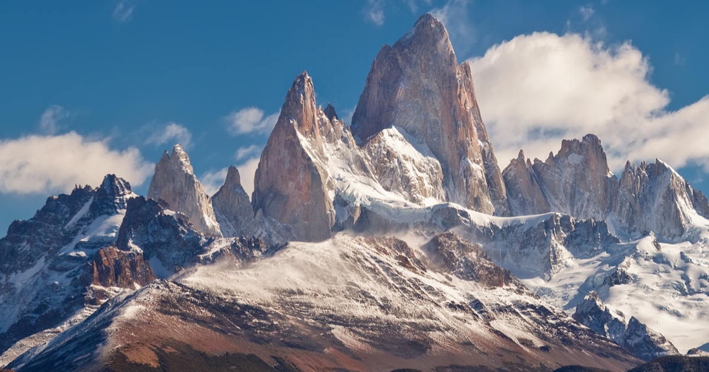
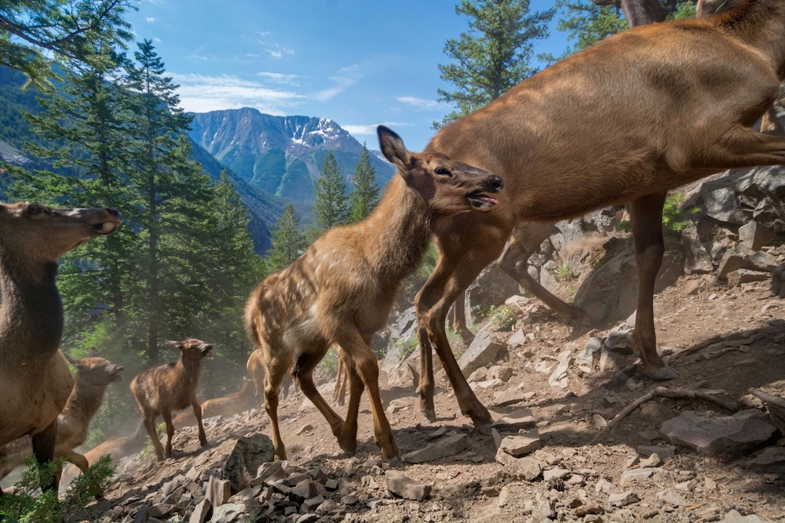
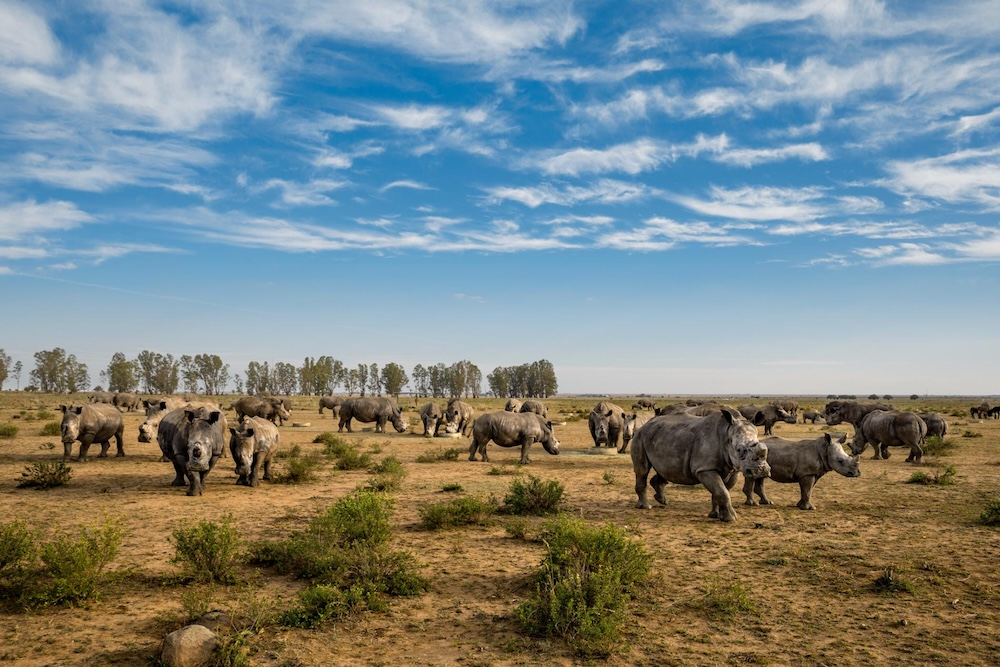
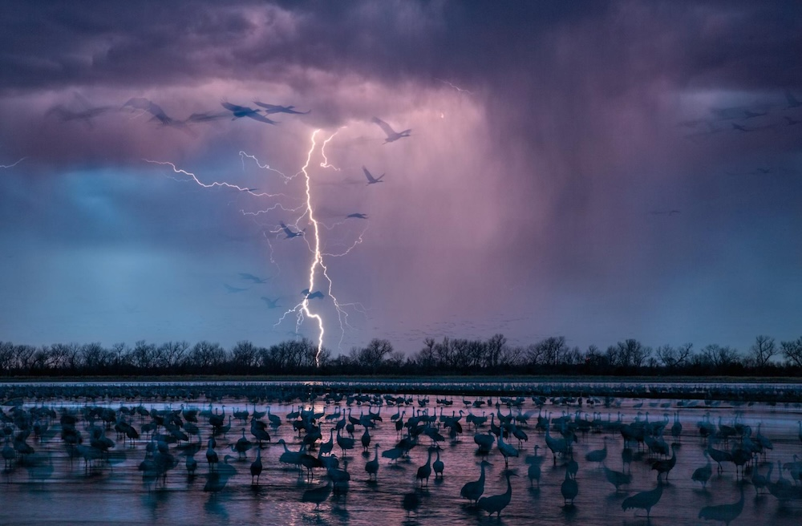
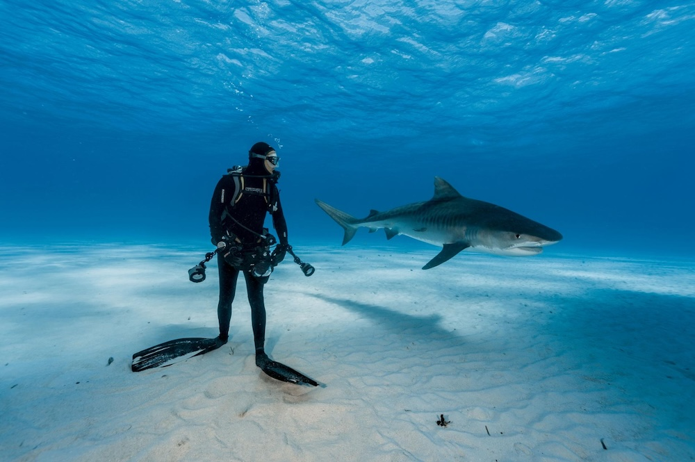
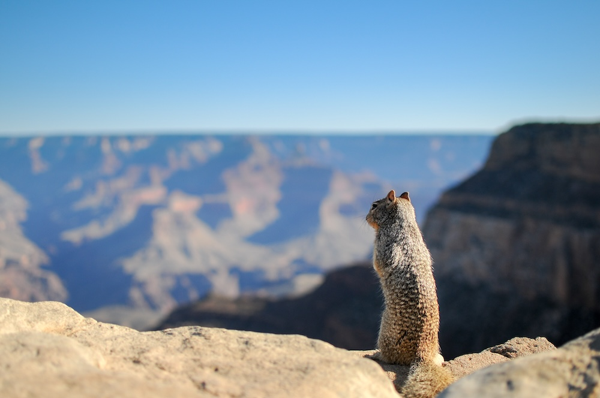
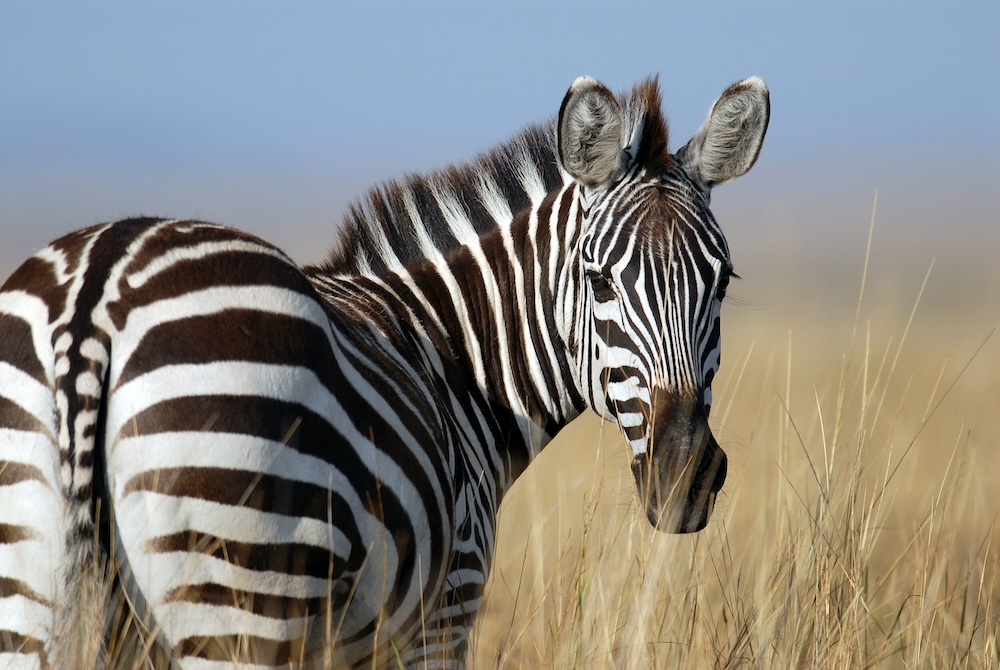
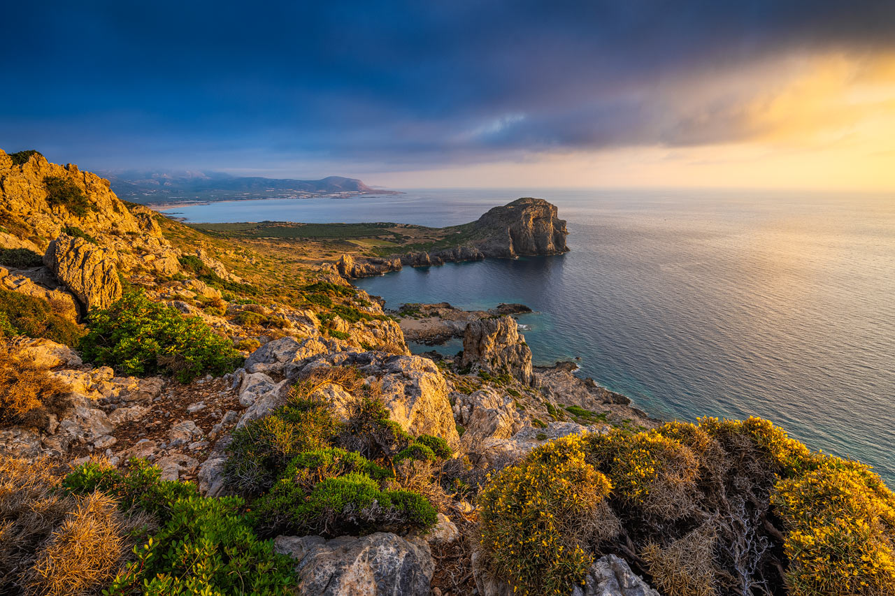
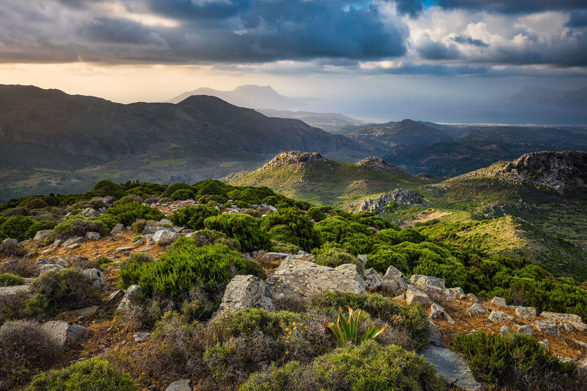

Anna e Pietro sono due instancabili esploratori che hanno dedicato la loro vita alla scoperta di nuovi luoghi, culture e tradizioni. La loro passione per i viaggi nasce da un amore condiviso per l'avventura e la scoperta, una voglia inarrestabile di immergersi nelle atmosfere più autentiche di ogni destinazione. Hanno attraversato continenti, esplorato città vibranti e remote località, sempre con il desiderio di conoscere nuove persone e assaporare l'essenza di ogni luogo visitato.
Per loro, viaggiare non è solo spostarsi da un posto all'altro, ma significa aprire la mente, ampliare i propri orizzonti e costruire ricordi indelebili che arricchiscono la loro esperienza di vita. Ogni viaggio rappresenta un capitolo unico della loro storia, fatto di incontri emozionanti, paesaggi mozzafiato e avventure che li hanno resi le persone curiose e affascinate dal mondo che sono oggi.

Ogni viaggio è un’opportunità unica per catturare momenti speciali e paesaggi mozzafiato. Nella nostra galleria, condividiamo alcuni dei ricordi più significativi dei nostri ultimi viaggi. Ogni immagine racconta una storia, una sensazione, un’emozione che abbiamo vissuto, dalle acque cristalline delle spiagge alle strade affollate delle città, passando per i paesaggi naturali incontaminati e i volti delle persone incontrate lungo il cammino. Sfogliando queste foto, speriamo che possiate percepire la bellezza e l’essenza dei luoghi che abbiamo visitato, e che ogni scatto vi ispiri a scoprire il mondo con occhi nuovi. Che si tratti di una vista panoramica mozzafiato o di un piccolo dettaglio catturato durante una passeggiata, ogni immagine ha il suo fascino unico.






Il prossimo viaggio in programma a Creta rappresenta una straordinaria opportunità di esplorare una delle isole più affascinanti del Mediterraneo, ricca di storia, cultura e paesaggi mozzafiato. Creta è un luogo che ha sempre attirato viaggiatori e amanti della natura grazie alla sua bellezza incontaminata, ai suoi villaggi pittoreschi, alle acque cristalline e alle tradizioni secolari.
Il nostro itinerario prevede una visita a vari punti salienti dell'isola, partendo dalla sua capitale, Heraklion, una città che mescola l'antico e il moderno in modo perfetto. Tra le prime tappe ci sarà il Palazzo di Cnosso, il sito archeologico più importante dell’isola, che affonda le radici nell'antica civiltà minoica. La magnificenza di questo palazzo, con i suoi labirinti e le storie di re e dee, è un viaggio nel tempo che ci permetterà di immergerci nell'affascinante mondo delle antiche leggende cretesi. Inoltre, il Museo Archeologico di Heraklion ci offrirà una panoramica completa delle scoperte fatte in tutta l'isola, tra cui straordinari reperti minoici, statue e vasi dipinti.

Proseguiremo il nostro viaggio lungo la costa, dove le acque turchesi e le spiagge di sabbia dorata ci inviteranno a fare delle pause rilassanti. La spiaggia di Elafonissi è una delle più belle, famosa per la sua sabbia rosa, creata dalla combinazione di conchiglie e sabbia bianca. In alternativa, la spiaggia di Balos, accessibile solo via barca o a piedi, è un angolo di paradiso nascosto, dove la laguna turchese si fonde perfettamente con il paesaggio montagnoso.
Uno degli aspetti più affascinanti di Creta è la sua natura selvaggia. Il Gole di Samaria, un'area protetta nel Parco Nazionale di Samaria, è una delle escursioni più belle da fare. La camminata, che può durare diverse ore, si snoda attraverso un canyon stretto e profondo, dove la flora e la fauna sono uniche. Camminare lungo questo sentiero, circondati da pareti rocciose che si innalzano imponenti, offre una sensazione di tranquillità e connessione con la natura incontaminata.
Le tradizioni cretesi, fortemente radicate nella vita quotidiana, saranno un altro punto di interesse del nostro viaggio. I piccoli villaggi dell'entroterra, come Anogeia, offrono l'opportunità di scoprire la vera essenza dell'isola, lontano dai circuiti turistici. Qui, la cucina cretese gioca un ruolo centrale. I piatti tipici come la moussaka, il souvlaki e le zuppe a base di legumi e verdure sono preparati con ingredienti freschi, spesso coltivati localmente. Ogni pasto è un viaggio nei sapori autentici dell'isola, accompagnato da un bicchiere di raki, la tradizionale grappa cretese.
Inoltre, Creta ha una tradizione musicale molto ricca, con danze tipiche che sono parte integrante delle feste popolari. Non perderemo l'occasione di assistere a una serata di musica cretese, magari in una taverna locale, dove il suono del lauto e del mandolino ci trasporterà in un'atmosfera magica.

Il nostro viaggio sarà anche l'occasione per esplorare l'arte e l'architettura cretese, che combinano influenze bizantine, venete e ottomane. Le chiese bizantine e le fortezze veneziane, come la Fortezza di Rethymno, offrono spunti per capire come le diverse civiltà abbiano lasciato il loro segno su quest'isola.
Infine, Creta è anche un luogo di leggenda. La mitologia greca è strettamente legata a questa terra: si dice che qui nacque Zeus, il re degli dèi, e che il famoso Minotauro abitasse nel labirinto di Cnosso. Questi miti sono parte integrante della cultura dell'isola e, visitando i luoghi a loro legati, sarà impossibile non sentirsi avvolti da un’aura di mistero e fascino.